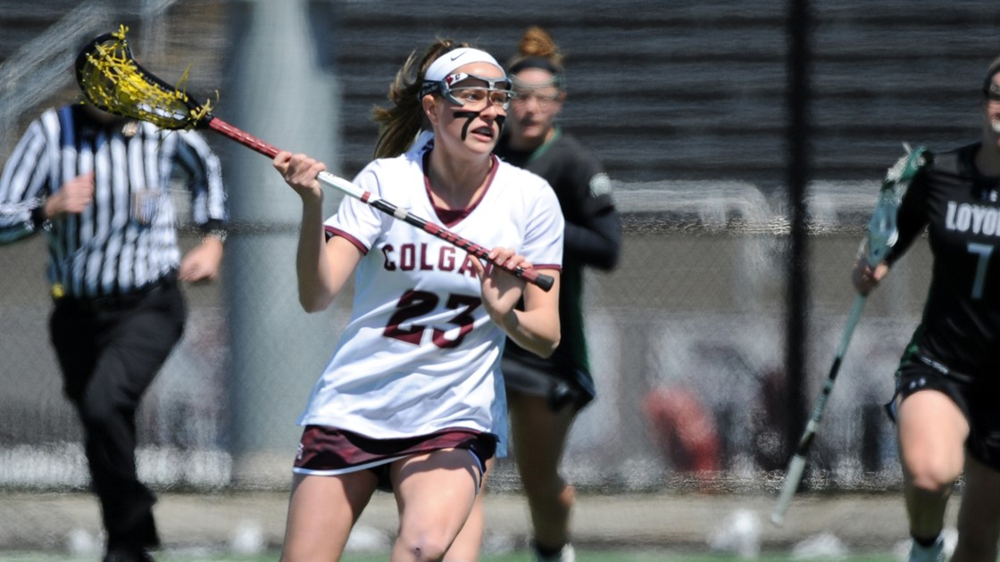
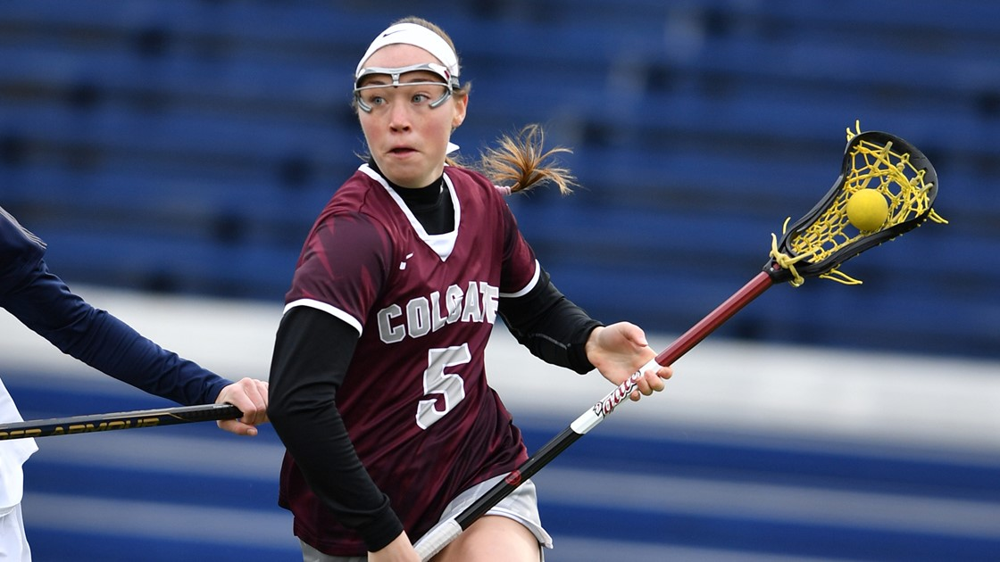
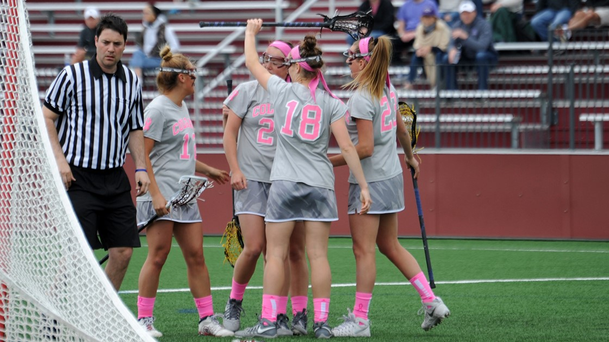
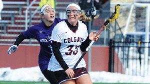
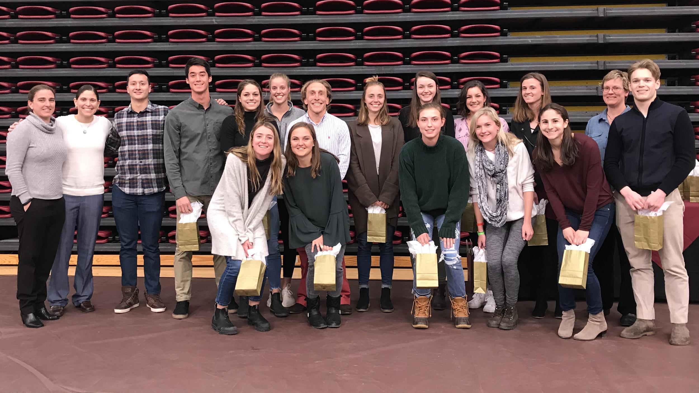

×
Home
Athletic News
Colgate Schedule
Team List ▾
◂
Women's Teams ▾
Basketball
Cross Country
Field Hockey
Ice Hockey
Lacrosse
Rowing
Soccer
Softball
Swimming & Diving
Tennis
Track & Field
Volleyball
Men's Teams ▾
Basketball
Cross Country
Football
Golf
Ice Hockey
Lacrosse
Rowing
Soccer
Swimming & Diving
Tennis
Track & Field
Notifications
Manage Account
☰
Colgate
Athletics
2018 Women's Lacrosse
News
Schedule
Roster
<
>

Atkinson ties career-high with four goals in loss to No. 10 Loyola

Gwynn, Gabriel each score twice in loss at Army

Women's Lacrosse set for Breast Cancer Awareness Game
Atkinson Ties Career-High with Four Goals

Women’s Lacrosse Defeats Boston U., Bucknell

Another Rise in Raider Academic Honor Roll